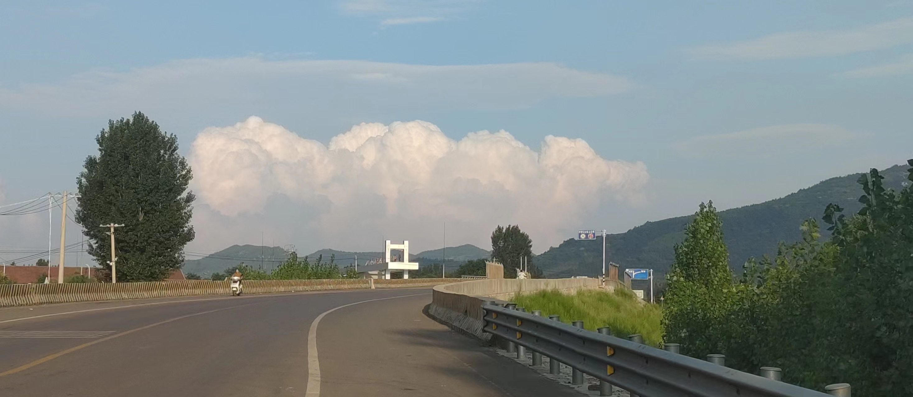
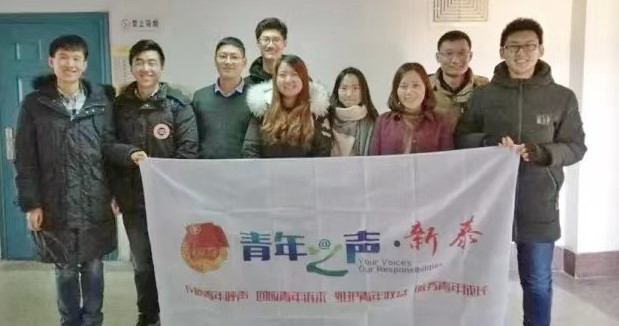
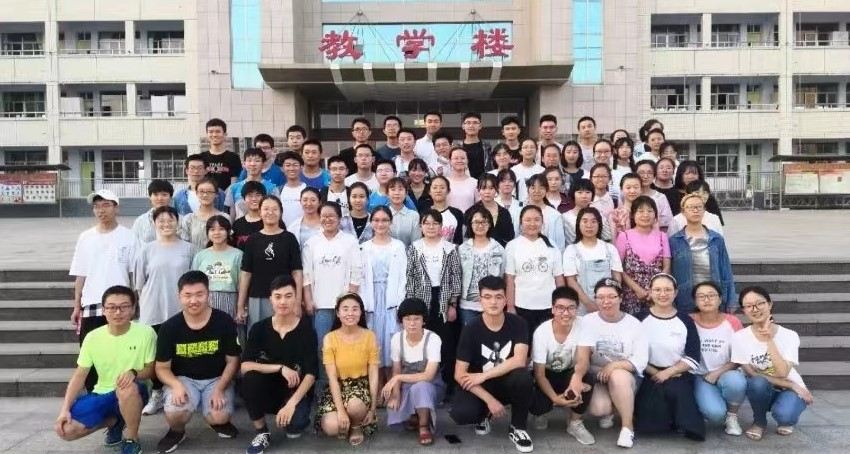
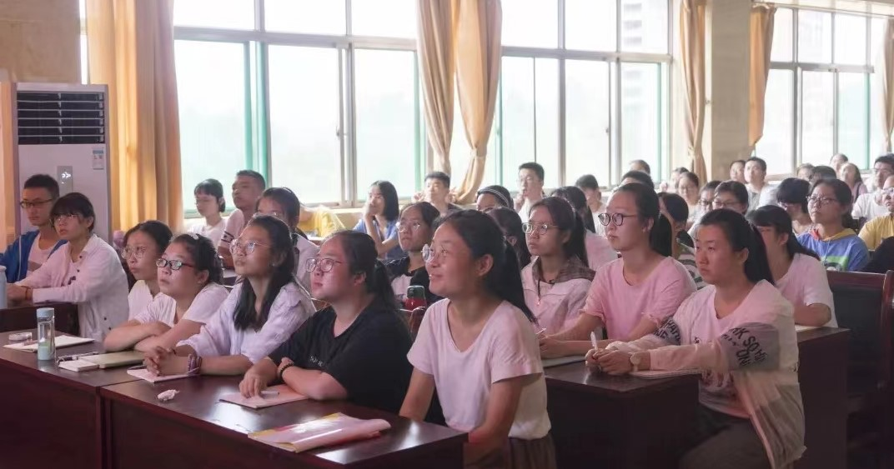
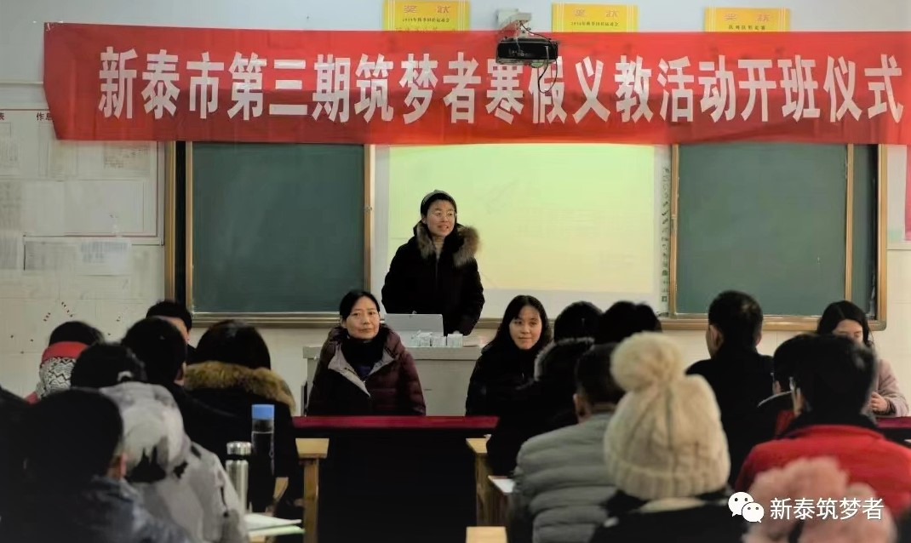
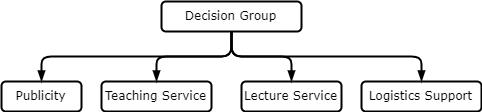
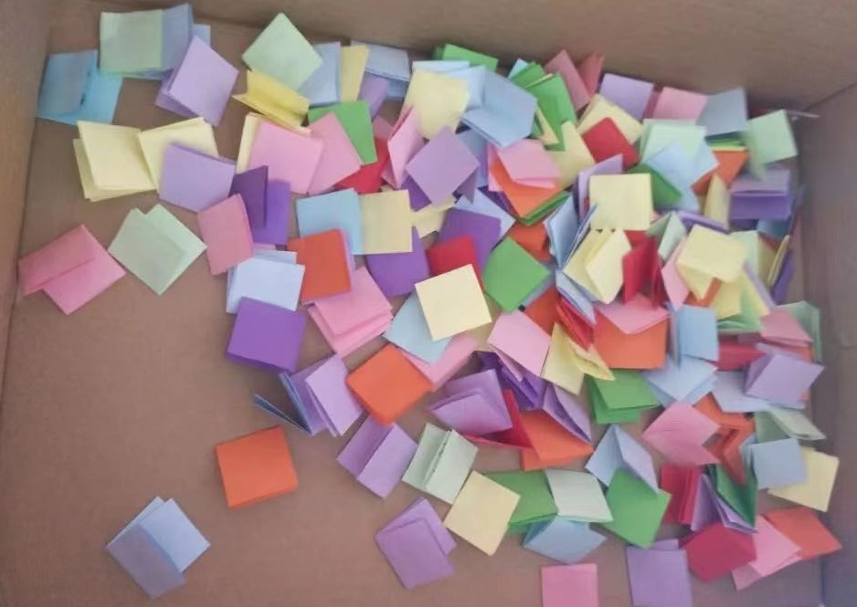

Co-Founder and Main Leader of Volunteer Service Group
Non-profit Education Support Organization: The Dreamer
Feb 4, 2018
As a girl living in a mountain village, I never go outside of my hometown until I entered University. Once I lived in Beijing, I felt frustrated about my narrow horizon and low comprehensive abilities. There is a too wide information gap between metropolises and small towns. Coincidentally, some friends also encountered similar puzzles in university. We were from top universities of China (including Renmin univ., Tsinghua Univ., Fudan Univ., Zhejiang Univ.,Tianjin Univ., and Harbin Institute of Technology), but we were suffering from lack of confidence in our campus life.

Road and Mountains Near My Home
This experience got me thinking of high school students in my hometown, who lack opportunities to see the world outside of the mountains. They may experience similar dilemmas in their future, maybe we can help them pursue better education using our information, ability, and experiences. So, after preparation, we together founded The Dreamer.

Memento Photo of Organization Foundation, 2018
The Dreamer is a non-profit organization aiming to support education development in my hometown.We recruited college student volunteers, and then taught high school students in the hometown. By now, we have implemented 8 sessions of supporting teaching activities during vacations. 300+ volunteers and 800+ students participated accumulatively.

Fourth Session of Dreamer, 2019
As the main leader of 5 sessions of activities, I spent almost all my summer vocations and winter vocations organizing and participating volunteering activities.Although busy and full of arrangements, I felt happy and content every time I saw faces of students in the classroom.

Glimpse of Students in a Lecture, 2020
Generally, I arranged 4 kinds of volunteering activities to students:
Courses teaching 9 disciplines from freshman year to senior year in high school.
Lectures on expansion of horizons,including introduction of cutting-edge technology, computer operation skills, appreciation of poetry, and so on.
Lectures on preparation experiences of College Entrance Examination and introduction of main majors and university life.
Provision of self-learning guidance and supervision for students who don’t choose relative courses.

Speech on Opening Ceremony of Third Session of Dreamer, 2019
To provide activities efficiently, we have 4 main groups:
Group of Publicity, responsible for managing social media online, distributing posters offline, and recruiting students.
Group of Teaching Service, responsible for recruiting teaching volunteers, coordinating schedule and content of teaching in different grades, and arranging self-learning issues.
Group of Lecture Service, responsible for arranging schedule, connecting lecturers, and preparing & summarizing the process of lectures.
Group of Logistics Support, responsible for assisting matters in other groups when necessary.

Basic Structure of Organization Management
As the main leader, I am responsible for coordinating volunteers in these groups and making important decisions including:
Seeking sponsoring and assistance from local government and high schools for necessary subsides and sites support.
Arranging jobs for different groups.
Revising push content published in Wechat Official Account and posters for publicity.
……
With our efforts, The organization was awarded the Best Volunteer Group by local government in 2019. More importantly, we have received countless thanks from students and their parents for contributions we make for high school education development. More and more students we taught volunteer to be a member of Dreamer when they enter university. I am so proud of making some contributions for a better future of my hometown.

Thanks Notes from Students, 2020